Listen First
Write one sentence about what you hear and see. Do not use any historical terms yet.
Faith Carried Across the Water · African Roots, American Soil: The Birth of Slave Religion
Enslaved Africans Carried Their Faith Across the Atlantic and Remade It
- Enslaved Africans brought languages, music, and sacred ideas—people are not “blank slates.”
- Traditions changed under slavery but survived—new practices grew from old ones.
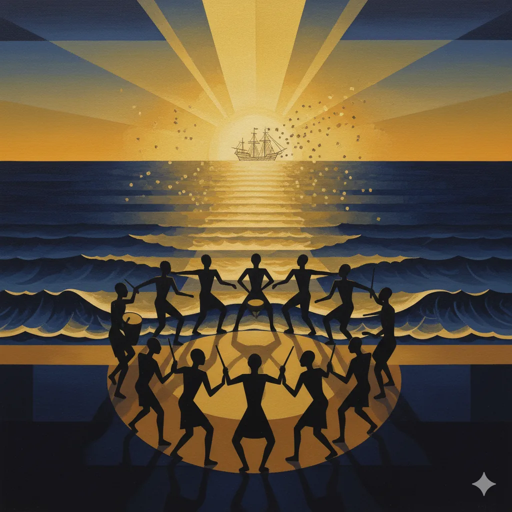
Faith Carried Across the Water · Encounter and Fusion
Christianity Became a Language of Hope, Sung to African Rhythms
- Introduced by slaveholders, Christianity became a language of hope and justice for the enslaved.
- Call‑and‑response, ring shouts, and spirituals braided African rhythm with Bible stories.
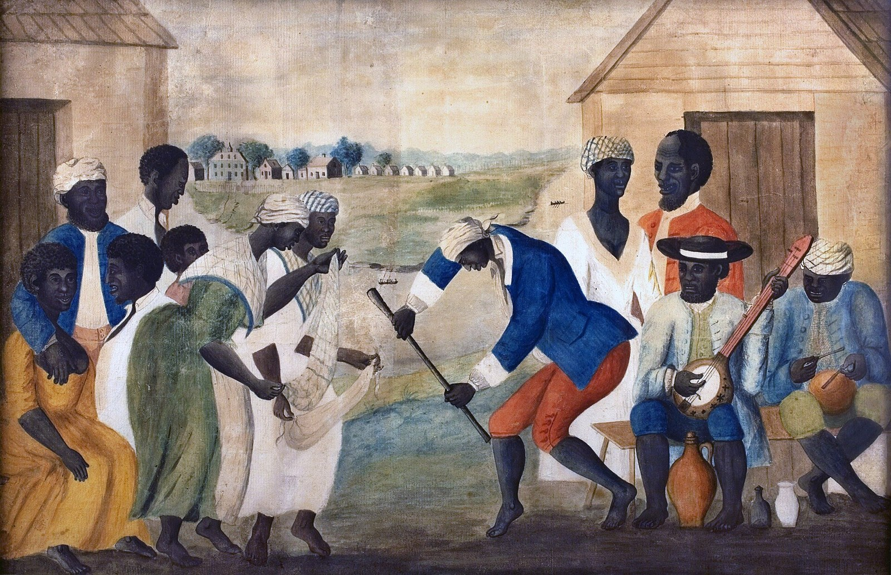
Faith Carried Across the Water (continued)
Key Framing
“The enslaved did not merely adopt Christianity; they transformed it.”
— after Albert J. Raboteau
White Religious Control · From Withholding the Gospel to Weaponizing It
Planters First Feared Baptism, Then Used It to Teach Obedience
- Early reluctance: Some planters feared baptism meant manumission (legal freedom), so they avoided conversions.
- Revival shift: The Great Awakening taught that conversion could “improve morals,” so religion was rebranded as discipline.
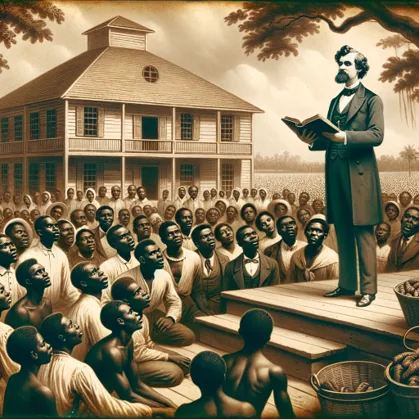
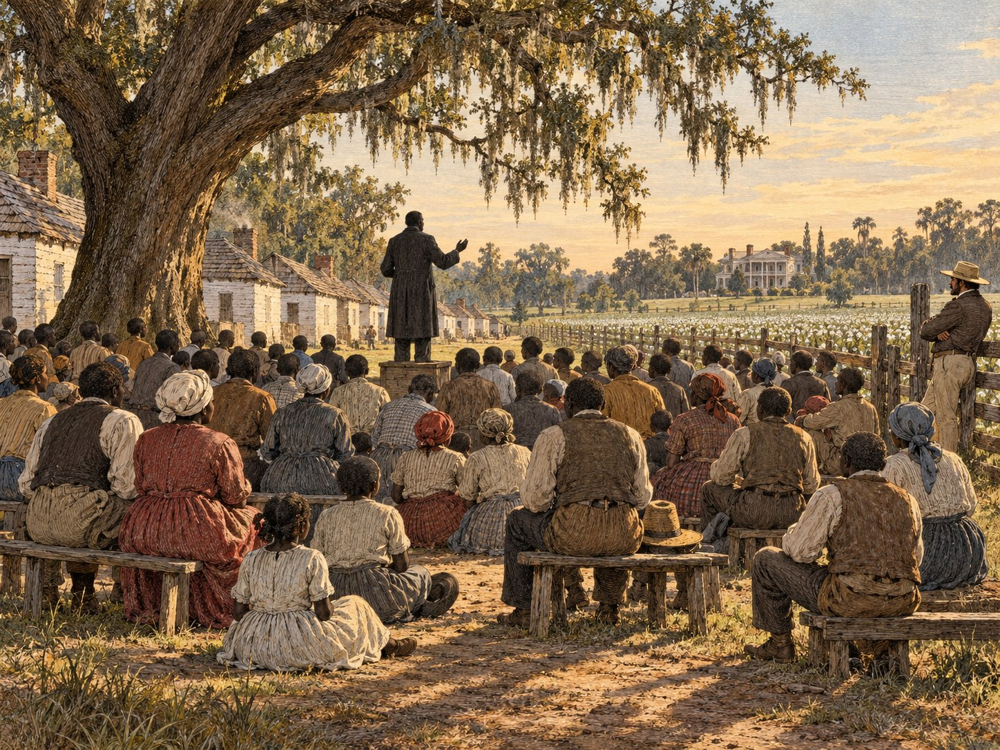
Image to comeHIST101_Ch9_Lec2_Watched_Black_Preacher_Plantation_1830s_revised_FA26.jpg
White Religious Control · From Withholding the Gospel to Weaponizing It
Missionaries and Watched Preachers Delivered a Gospel of Submission
- “Civilizing” talk: Missionaries promised Christianity would make enslaved people obedient workers.
- Controlled speech: Black preachers were allowed under surveillance and expected to preach submission.
- Outcome: Religion became part of the system that justified slavery.
White Religious Control · Christianity as Social Discipline
Slaveholders Picked the Bible Verses That Taught Obedience
- Selective scripture: Passages like “Curse of Ham” and “Slaves obey your masters” were emphasized; liberation stories were minimized.
- Instruction manuals: Charles Colcock Jones’s catechisms centered on obedience, not Exodus-style freedom.
Slave Catechism
“Who gave you a master and a mistress?”
“God gave them to me.”
— Slave Catechism
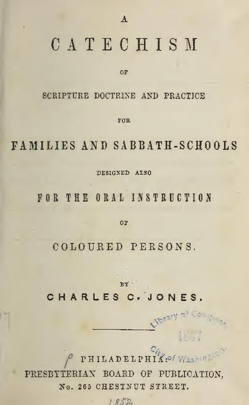
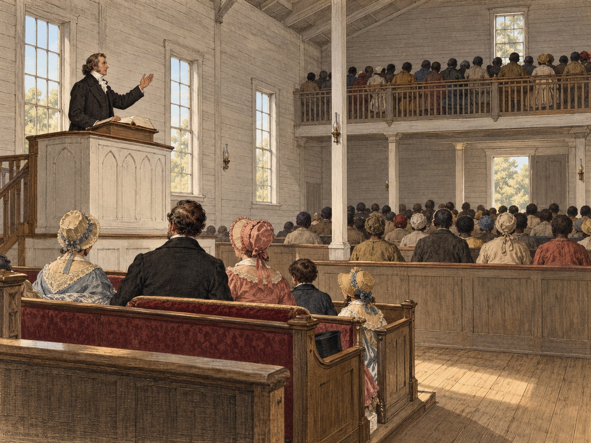
Image to comeHIST101_Ch9_Lec2_Supervised_Plantation_Sunday_Service_1840s_revised_FA26.jpg
White Religious Control · Christianity as Social Discipline
Supervised Worship Was Meant to Make Slavery Look God-Approved
- Supervised worship: Plantation services had white oversight; messages were filtered.
- Purpose: Make slavery look God‑approved and prevent collective organizing.
African Retentions & Syncretism
Enslaved Christians Blended African Worship With Christian Belief
Transforming Christianity from Within
- Ring shout, call‑and‑response, spirit possession—worship with movement and rhythm.
- Rootwork & Hoodoo used alongside crosses, prayers, and Psalms.
- Syncretism means blending: African cosmologies + Christian beliefs → a new faith.
“The slaves made Christianity their own, turning the religion of their masters into an instrument of deliverance.”
— Albert J. Raboteau, Slave Religion
— Albert J. Raboteau, Slave Religion
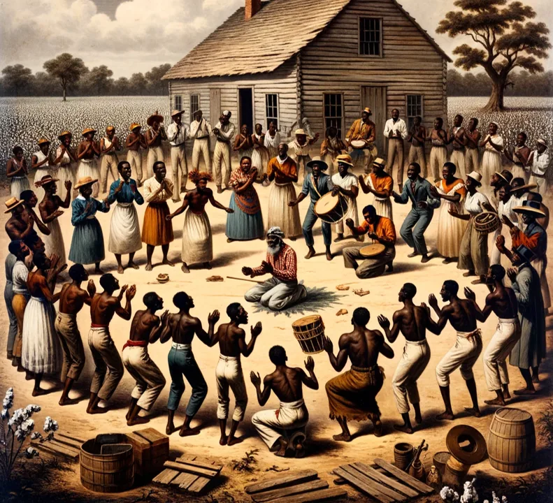
Slave Theological Resistance
Enslaved Christians Read the Bible as a Story of Liberation
Reading Scripture from Below
- Exodus: God frees slaves—Pharaoh is like the master class; “Let my people go.”
- Jesus’ suffering: God knows pain and promises justice (suffering servant lens).
- Creation: All people bear God’s image—slavery violates that truth.
- Prophets: God sides with the oppressed; injustice will be judged.
- Hope: “Great gettin’ up mornin’” = resurrection/justice to come.
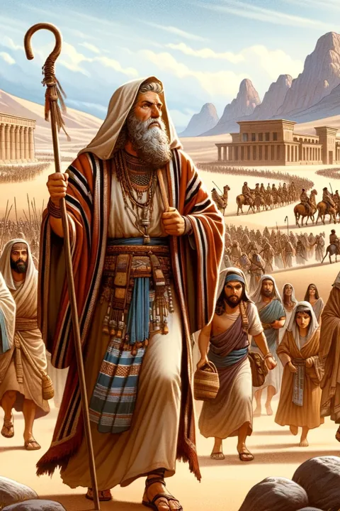
The “Invisible Institution”
Hush Harbors Let Enslaved People Worship Beyond White Eyes
Hidden Religious Life
- Hush harbors & brush arbors: worship beyond white oversight.
- Technique: an overturned pot over a fire or doorway helps absorb and muffle sound.
- African elements: Rhythm, dance, call‑and‑response, spirit possession.
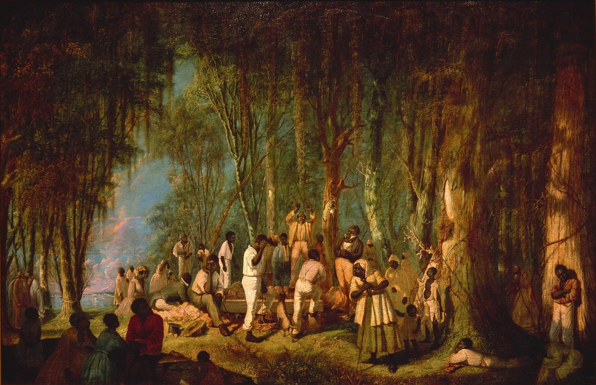
The “Invisible Institution” · Risk and Legacy
Secret Worship Was Dangerous, and It Became the Seedbed of the Black Church
- Risk: punishment if discovered.
- Legacy: foundation for independent Black churches after emancipation.
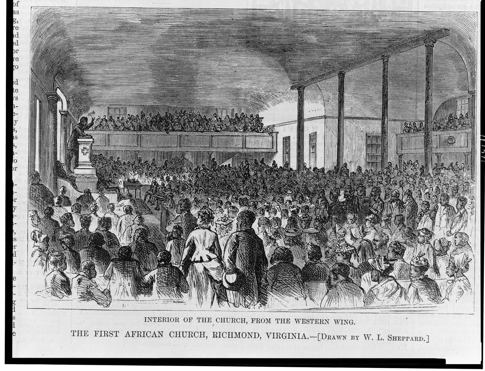
Spirituals as Resistance
Spirituals Carried Coded Messages of Defiance and Escape
- “Go Down, Moses”: Exodus metaphor; coded defiance.
- “Wade in the Water”: Practical escape instruction.
- “Swing Low, Sweet Chariot”: Hope of deliverance.
- Function: Theology + protest + communication network.
Spirituals as Resistance (continued)
🎥 “Go Down, Moses” (opens on YouTube)

🎥 “Wade in the Water” (Spiritual)
Spirituals as Resistance (continued)
🎥 “Swing Low, Sweet Chariot” (Spiritual)
Slave Preachers & Leadership
Enslaved Preachers Walked a Line Between Owners and Their People
- Role: Spiritual guides who taught, counseled, and organized.
- How chosen: Community‑recognized gifts (speaking, wisdom, healing) more than formal schooling.
- Tension: Pressure from owners vs. loyalty to the enslaved community.
- Risk: Punishment if messages sounded “rebellious.”
- Legacy: Training ground for leadership after emancipation.
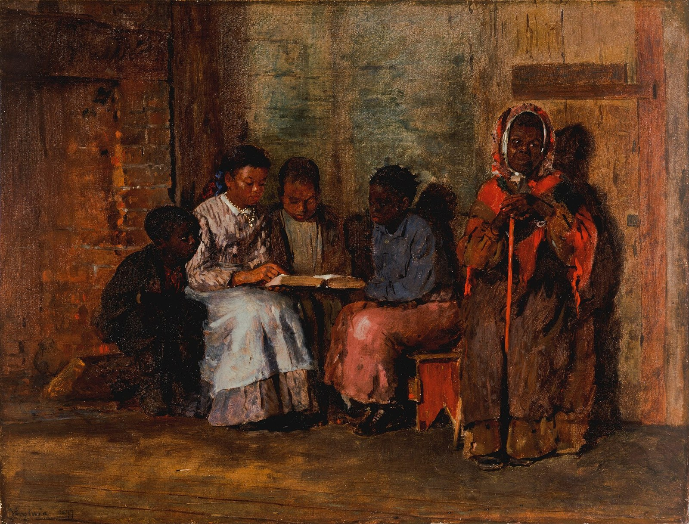
Nat Turner: Prophet & Revolutionary
Nat Turner Read Scripture as a Call to Revolt
- Early life & faith: Literate; deep Bible study, fasting and prayer; called “The Prophet.”
- 1831 rebellion: Southampton County, VA. Solar eclipse read as a sign; uprising Aug 21–23.
- Aftermath: Uprising crushed; Turner executed; stricter laws on literacy, preaching, and meetings.
- Meaning: Apocalyptic faith can push from patience to action.
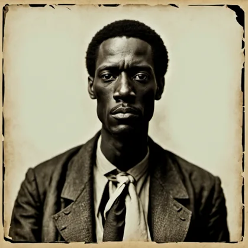
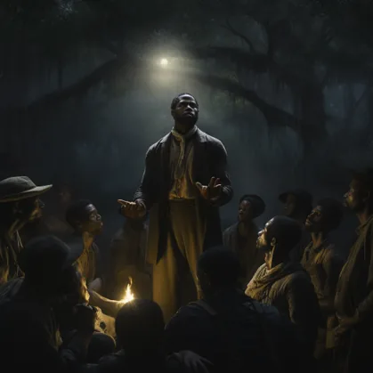
Top: invented likeness — no authentic portrait of Nat Turner exists. AI-generated historical interpretation; not a period image or historical evidence.